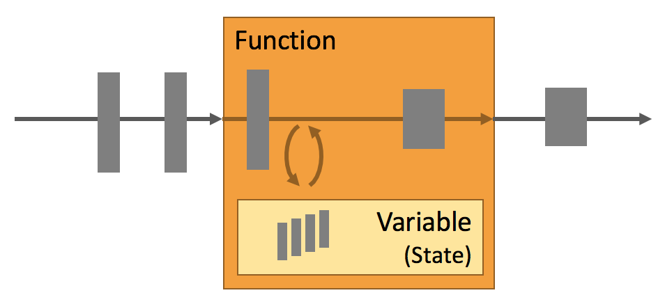

什么是Apache Flink？
Apache Flink 是一个框架和分布式处理引擎，用于在无边界和有边界数据流上进行有状态的计算。Flink 能在所有常见集群环境中运行，并能以内存速度和任意规模进行计算。
架构
有界数据
有界数据集对开发者来说都很熟悉，在常规的处理中我们都会从Mysql，文本等获取数据进行计算分析。我们在处理此类数据时，特点就是数据是静止不动的。也就是说，没有再进行追加。又或者说再处理的当时时刻不考虑追加写入操作。所以有界数据集又或者说是有时间边界。在某个时间内的结果进行计算。那么这种计算称之为批计算，批处理。Batch Processing
无界数据
对于某些场景，类似于Kafka持续的计算等都被认定为无界数据，无界数据集是会发生持续变更的、连续追加的。例如:服务器信令、网络传输流、实时日志信息等。对于此类持续变更、追加的数据的计算方式称之为流计算。Streaming Processing

场景比较
无界数据与有界数据有点类似于池塘和江河，我们在计算池塘中的鱼的数量时只需要把池塘中当前所有的鱼都计算一次就可以了。那么当前时刻，池塘中有多少条鱼就是结果。 无界数据集类似于江河中的鱼，在奔流到海的过程中每时每刻都会有鱼流过而进入大海。那么计算鱼的数量就像是持续追加的。
有界数据与无界数据是一个相对模糊的概念，如果数据一条一条的经过处理引擎那么则可以认为是无界的，那么如果每间隔一分钟、一小时、一天进行一次计算那么则认为这一段时间的数据又相对是有界的。有界的数据又可以把数据一条一条的通过计算引擎，造成无界的数据集。所以，有界数据集与无界数据集可以存在互换的。因此业内也就开始追寻批流统一的框架。
能够同时实现批处理与流处理的框架有Apache Spark和Apache Flink，而Apache Spark的流处理场景是一个微批场景，也就是它会在特定的时间间隔发起一次计算。而不是每条都会触发计算。也就是相当于把无界数据集切分为小量的有界数据。
Apache Flink基于有界数据集与无界数据集的特点，最终将批处理与流处理混合到同一套引擎当中，用户使用Apache Flink引擎能够同时实现批处理与流处理任务。
部署应用到任意地方
Apache Flink 是一个分布式系统，它需要计算资源来执行应用程序。Flink 集成了所有常见的集群资源管理器，例如 Hadoop YARN、 Apache Mesos 和 Kubernetes，但同时也可以作为独立集群运行。
Flink 被设计为能够很好地工作在上述每个资源管理器中，这是通过资源管理器特定(resource-manager-specific)的部署模式实现的。Flink 可以采用与当前资源管理器相适应的方式进行交互。
部署 Flink 应用程序时，Flink 会根据应用程序配置的并行性自动标识所需的资源，并从资源管理器请求这些资源。在发生故障的情况下，Flink 通过请求新资源来替换发生故障的容器。提交或控制应用程序的所有通信都是通过 REST 调用进行的，这可以简化 Flink 与各种环境中的集成。
运行任意规模应用
Flink 旨在任意规模上运行有状态流式应用。因此，应用程序被并行化为可能数千个任务，这些任务分布在集群中并发执行。所以应用程序能够充分利用无尽的 CPU、内存、磁盘和网络 IO。而且 Flink 很容易维护非常大的应用程序状态。其异步和增量的检查点算法对处理延迟产生最小的影响，同时保证精确一次状态的一致性。
Flink 用户报告了其生产环境中一些令人印象深刻的扩展性数字
处理每天处理数万亿的事件,
应用维护几TB大小的状态, 和
应用在数千个内核上运行。
利用内存性能
有状态Flink应用程序针对本地状态访问进行了优化。任务状态始终保持在内存中，或者，如果状态大小超出可用内存，则始终保持在访问有效的磁盘数据结构中。因此，任务通过访问本地（通常在内存中）状态执行所有计算，从而产生非常低的处理延迟。Flink通过定期将本地状态异步指向持久性存储来确保出现故障时一次状态的一致性。

流处理应用的基本组件
可以由流处理框架构建和执行的应用程序类型是由框架对 流、状态、时间 的支持程度来决定的。在下文中，我们将对上述这些流处理应用的基本组件逐一进行描述，并对 Flink 处理它们的方法进行细致剖析。
流(Streams)
显而易见，（数据）流是流处理的基本要素。然而，流也拥有着多种特征。这些特征决定了流如何以及何时被处理。Flink 是一个能够处理任何类型数据流的强大处理框架。
- 有界 和 无界 的数据流：流可以是无界的；也可以是有界的，例如固定大小的数据集。Flink 在无界的数据流处理上拥有诸多功能强大的特性，同时也针对有界的数据流开发了专用的高效算子。
- 实时 和 历史记录 的数据流：所有的数据都是以流的方式产生，但用户通常会使用两种截然不同的方法处理数据。或是在数据生成时进行实时的处理；亦或是先将数据流持久化到存储系统中——例如文件系统或对象存储，然后再进行批处理。Flink 的应用能够同时支持处理实时以及历史记录数据流。
状态(State)
只有在每一个单独的事件上进行转换操作的应用才不需要状态，换言之，每一个具有一定复杂度的流处理应用都是有状态的。任何运行基本业务逻辑的流处理应用都需要在一定时间内存储所接收的事件或中间结果，以供后续的某个时间点（例如收到下一个事件或者经过一段特定时间）进行访问并进行后续处理。

应用状态是 Flink 中的一等公民，Flink 提供了许多状态管理相关的特性支持，其中包括：
- 多种状态基础类型：Flink 为多种不同的数据结构提供了相对应的状态基础类型，例如原子值（value），列表（list）以及映射（map）。开发者可以基于处理函数对状态的访问方式，选择最高效、最适合的状态基础类型。
- 插件化的State Backend：State Backend 负责管理应用程序状态，并在需要的时候进行 checkpoint。Flink 支持多种 state backend，可以将状态存在内存或者 RocksDB。RocksDB 是一种高效的嵌入式、持久化键值存储引擎。Flink 也支持插件式的自定义 state backend 进行状态存储。
- 精确一次语义：Flink 的 checkpoint 和故障恢复算法保证了故障发生后应用状态的一致性。因此，Flink 能够在应用程序发生故障时，对应用程序透明，不造成正确性的影响。
- 超大数据量状态：Flink 能够利用其异步以及增量式的 checkpoint 算法，存储数 TB 级别的应用状态。
- 可弹性伸缩的应用：Flink 能够通过在更多或更少的工作节点上对状态进行重新分布，支持有状态应用的分布式的横向伸缩。
时间(Time)
时间是流处理应用另一个重要的组成部分。因为事件总是在特定时间点发生，所以大多数的事件流都拥有事件本身所固有的时间语义。进一步而言，许多常见的流计算都基于时间语义，例如窗口聚合、会话计算、模式检测和基于时间的 join。流处理的一个重要方面是应用程序如何衡量时间，即区分事件时间（event-time）和处理时间（processing-time）。
Flink 提供了丰富的时间语义支持。
- 事件时间模式：使用事件时间语义的流处理应用根据事件本身自带的时间戳进行结果的计算。因此，无论处理的是历史记录的事件还是实时的事件，事件时间模式的处理总能保证结果的准确性和一致性。
- Watermark 支持：Flink 引入了 watermark 的概念，用以衡量事件时间进展。Watermark 也是一种平衡处理延时和完整性的灵活机制。
- 迟到数据处理：当以带有 watermark 的事件时间模式处理数据流时，在计算完成之后仍会有相关数据到达。这样的事件被称为迟到事件。Flink 提供了多种处理迟到数据的选项，例如将这些数据重定向到旁路输出（side output）或者更新之前完成计算的结果。
- 处理时间模式：除了事件时间模式，Flink 还支持处理时间语义。处理时间模式根据处理引擎的机器时钟触发计算，一般适用于有着严格的低延迟需求，并且能够容忍近似结果的流处理应用。
分层 API(Layered APIs)
Flink 根据抽象程度分层，提供了三种不同的 API。每一种 API 在简洁性和表达力上有着不同的侧重，并且针对不同的应用场景。

下文中，我们将简要描述每一种 API 及其应用，并提供相关的代码示例。
ProcessFunction
ProcessFunction 是 Flink 所提供的最具表达力的接口。ProcessFunction 可以处理一或两条输入数据流中的单个事件或者归入一个特定窗口内的多个事件。它提供了对于时间和状态的细粒度控制。开发者可以在其中任意地修改状态，也能够注册定时器用以在未来的某一时刻触发回调函数。因此，你可以利用 ProcessFunction 实现许多有状态的事件驱动应用所需要的基于单个事件的复杂业务逻辑。
下面的代码示例展示了如何在 KeyedStream 上利用 KeyedProcessFunction 对标记为 START 和 END 的事件进行处理。当收到 START 事件时，处理函数会记录其时间戳，并且注册一个时长4小时的计时器。如果在计时器结束之前收到 END 事件，处理函数会计算其与上一个 START 事件的时间间隔，清空状态并将计算结果返回。否则，计时器结束，并清空状态。
/**
* 将相邻的 keyed START 和 END 事件相匹配并计算两者的时间间隔
* 输入数据为 Tuple2<String, String> 类型，第一个字段为 key 值，
* 第二个字段标记 START 和 END 事件。
*/
public static class StartEndDuration
extends KeyedProcessFunction<String, Tuple2<String, String>, Tuple2<String, Long>> {
private ValueState<Long> startTime;
@Override
public void open(Configuration conf) {
// obtain state handle
startTime = getRuntimeContext()
.getState(new ValueStateDescriptor<Long>("startTime", Long.class));
}
/** Called for each processed event. */
@Override
public void processElement(
Tuple2<String, String> in,
Context ctx,
Collector<Tuple2<String, Long>> out) throws Exception {
switch (in.f1) {
case "START":
// set the start time if we receive a start event.
startTime.update(ctx.timestamp());
// register a timer in four hours from the start event.
ctx.timerService()
.registerEventTimeTimer(ctx.timestamp() + 4 * 60 * 60 * 1000);
break;
case "END":
// emit the duration between start and end event
Long sTime = startTime.value();
if (sTime != null) {
out.collect(Tuple2.of(in.f0, ctx.timestamp() - sTime));
// clear the state
startTime.clear();
}
default:
// do nothing
}
}
/** Called when a timer fires. */
@Override
public void onTimer(
long timestamp,
OnTimerContext ctx,
Collector<Tuple2<String, Long>> out) {
// Timeout interval exceeded. Cleaning up the state.
startTime.clear();
}
}
这个例子充分展现了 KeyedProcessFunction 强大的表达力，也因此是一个实现相当复杂的接口。
DataStream API
DataStream API 为许多通用的流处理操作提供了处理原语。这些操作包括窗口、逐条记录的转换操作，在处理事件时进行外部数据库查询等。DataStream API 支持 Java 和 Scala 语言，预先定义了例如map()、reduce()、aggregate() 等函数。你可以通过扩展实现预定义接口或使用 Java、Scala 的 lambda 表达式实现自定义的函数。
下面的代码示例展示了如何捕获会话时间范围内所有的点击流事件，并对每一次会话的点击量进行计数。
// 网站点击 Click 的数据流
DataStream<Click> clicks = ...
DataStream<Tuple2<String, Long>> result = clicks
// 将网站点击映射为 (userId, 1) 以便计数
.map(
// 实现 MapFunction 接口定义函数
new MapFunction<Click, Tuple2<String, Long>>() {
@Override
public Tuple2<String, Long> map(Click click) {
return Tuple2.of(click.userId, 1L);
}
})
// 以 userId (field 0) 作为 key
.keyBy(0)
// 定义 30 分钟超时的会话窗口
.window(EventTimeSessionWindows.withGap(Time.minutes(30L)))
// 对每个会话窗口的点击进行计数，使用 lambda 表达式定义 reduce 函数
.reduce((a, b) -> Tuple2.of(a.f0, a.f1 + b.f1));
SQL & Table API
Flink 支持两种关系型的 API，Table API 和 SQL。这两个 API 都是批处理和流处理统一的 API，这意味着在无边界的实时数据流和有边界的历史记录数据流上，关系型 API 会以相同的语义执行查询，并产生相同的结果。Table API 和 SQL 借助了 Apache Calcite 来进行查询的解析，校验以及优化。它们可以与 DataStream 和 DataSet API 无缝集成，并支持用户自定义的标量函数，聚合函数以及表值函数。
Flink 的关系型 API 旨在简化数据分析、数据流水线和 ETL 应用的定义。
下面的代码示例展示了如何使用 SQL 语句查询捕获会话时间范围内所有的点击流事件，并对每一次会话的点击量进行计数。此示例与上述 DataStream API 中的示例有着相同的逻辑。
SELECT userId, COUNT(*)
FROM clicks
GROUP BY SESSION(clicktime, INTERVAL '30' MINUTE), userId
库
Flink 具有数个适用于常见数据处理应用场景的扩展库。这些库通常嵌入在 API 中，且并不完全独立于其它 API。它们也因此可以受益于 API 的所有特性，并与其他库集成。
- 复杂事件处理(CEP)：模式检测是事件流处理中的一个非常常见的用例。Flink 的 CEP 库提供了 API，使用户能够以例如正则表达式或状态机的方式指定事件模式。CEP 库与 Flink 的 DataStream API 集成，以便在 DataStream 上评估模式。CEP 库的应用包括网络入侵检测，业务流程监控和欺诈检测。
- DataSet API：DataSet API 是 Flink 用于批处理应用程序的核心 API。DataSet API 所提供的基础算子包括map、reduce、(outer) join、co-group、iterate等。所有算子都有相应的算法和数据结构支持，对内存中的序列化数据进行操作。如果数据大小超过预留内存，则过量数据将存储到磁盘。Flink 的 DataSet API 的数据处理算法借鉴了传统数据库算法的实现，例如混合散列连接（hybrid hash-join）和外部归并排序（external merge-sort）。
- Gelly: Gelly 是一个可扩展的图形处理和分析库。Gelly 是在 DataSet API 之上实现的，并与 DataSet API 集成。因此，它能够受益于其可扩展且健壮的操作符。Gelly 提供了内置算法，如 label propagation、triangle enumeration 和 page rank 算法，也提供了一个简化自定义图算法实现的 Graph API。
7 * 24小时稳定运行
在分布式系统中，服务故障是常有的事，为了保证服务能够7*24小时稳定运行，像Flink这样的流处理器故障恢复机制是必须要有的。显然这就意味着，它(这类流处理器)不仅要能在服务出现故障时候能够重启服务，而且还要当故障发生时，保证能够持久化服务内部各个组件的当前状态，只有这样才能保证在故障恢复时候，服务能够继续正常运行，好像故障就没有发生过一样。
Flink通过几下多种机制维护应用可持续运行及其一致性:
- 检查点的一致性: Flink的故障恢复机制是通过建立分布式应用服务状态一致性检查点实现的，当有故障产生时，应用服务会重启后，再重新加载上一次成功备份的状态检查点信息。结合可重放的数据源，该特性可保证精确一次（exactly-once）的状态一致性。
- 高效的检查点: 如果一个应用要维护一个TB级的状态信息，对此应用的状态建立检查点服务的资源开销是很高的，为了减小因检查点服务对应用的延迟性（SLAs服务等级协议）的影响，Flink采用异步及增量的方式构建检查点服务。
- 端到端的精确一次: Flink 为某些特定的存储支持了事务型输出的功能，及时在发生故障的情况下，也能够保证精确一次的输出。
- 集成多种集群管理服务: Flink已与多种集群管理服务紧密集成，如 Hadoop YARN, Mesos, 以及 Kubernetes。当集群中某个流程任务失败后，一个新的流程服务会自动启动并替代它继续执行。
- 内置高可用服务: Flink内置了为解决单点故障问题的高可用性服务模块，此模块是基于Apache ZooKeeper 技术实现的，Apache ZooKeeper是一种可靠的、交互式的、分布式协调服务组件。
Flink能够更方便地升级、迁移、暂停、恢复应用服务
驱动关键业务服务的流应用是经常需要维护的。比如需要修复系统漏洞，改进功能，或开发新功能。然而升级一个有状态的流应用并不是简单的事情，因为在我们为了升级一个改进后版本而简单停止当前流应用并重启时，我们还不能丢失掉当前流应用的所处于的状态信息。
而Flink的 Savepoint 服务就是为解决升级服务过程中记录流应用状态信息及其相关难题而产生的一种唯一的、强大的组件。一个 Savepoint，就是一个应用服务状态的一致性快照，因此其与checkpoint组件的很相似，但是与checkpoint相比，Savepoint 需要手动触发启动，而且当流应用服务停止时，它并不会自动删除。Savepoint 常被应用于启动一个已含有状态的流服务，并初始化其（备份时）状态。Savepoint 有以下特点：
- 便于升级应用服务版本: Savepoint 常在应用版本升级时使用，当前应用的新版本更新升级时，可以根据上一个版本程序记录的 Savepoint 内的服务状态信息来重启服务。它也可能会使用更早的 Savepoint 还原点来重启服务，以便于修复由于有缺陷的程序版本导致的不正确的程序运行结果。
- 方便集群服务移植: 通过使用 Savepoint，流服务应用可以自由的在不同集群中迁移部署。
- 方便Flink版本升级: 通过使用 Savepoint，可以使应用服务在升级Flink时，更加安全便捷。
- 增加应用并行服务的扩展性: Savepoint 也常在增加或减少应用服务集群的并行度时使用。
- 便于A/B测试及假设分析场景对比结果: 通过把同一应用在使用不同版本的应用程序，基于同一个 Savepoint 还原点启动服务时，可以测试对比2个或多个版本程序的性能及服务质量。
- 暂停和恢复服务: 一个应用服务可以在新建一个 Savepoint 后再停止服务，以便于后面任何时间点再根据这个实时刷新的 Savepoint 还原点进行恢复服务。
- 归档服务: Savepoint 还提供还原点的归档服务，以便于用户能够指定时间点的 Savepoint 的服务数据进行重置应用服务的状态，进行恢复服务。
监控和控制应用服务
如其它应用服务一样，持续运行的流应用服务也需要监控及集成到一些基础设施资源管理服务中，例如一个组件的监控服务及日志服务等。监控服务有助于预测问题并提前做出反应，日志服务提供日志记录能够帮助追踪、调查、分析故障发生的根本原因。最后，便捷易用的访问控制应用服务运行的接口也是Flink的一个重要的亮点特征。
Flink与许多常见的日志记录和监视服务集成得很好，并提供了一个REST API来控制应用服务和查询应用信息。具体表现如下：
- Web UI方式: Flink提供了一个web UI来观察、监视和调试正在运行的应用服务。并且还可以执行或取消组件或任务的执行。
- 日志集成服务:Flink实现了流行的slf4j日志接口，并与日志框架log4j或logback集成。
- 指标服务: Flink提供了一个复杂的度量系统来收集和报告系统和用户定义的度量指标信息。度量信息可以导出到多个报表组件服务，包括 JMX, Ganglia, Graphite, Prometheus, StatsD, Datadog, 和 Slf4j.
- 标准的WEB REST API接口服务: Flink提供多种REST API接口，有提交新应用程序、获取正在运行的应用程序的Savepoint服务信息、取消应用服务等接口。REST API还提供元数据信息和已采集的运行中或完成后的应用服务的指标信息。